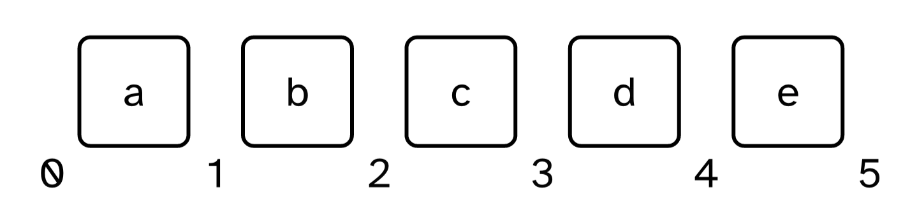
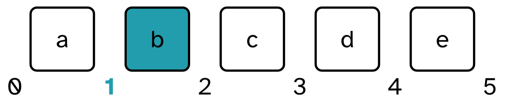
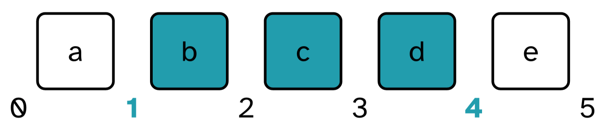
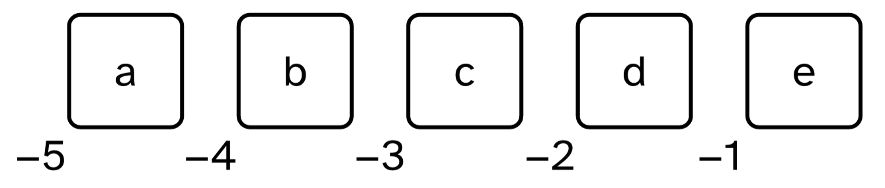

python
from pathlib import PathThis lesson has two goals:
In order to read in a file, first we need to tell python where a file is. We’ll do this with pathlib.Path(). For a recap of what paths are, see Understanding Directories.
Let’s just call Path() and see what it gives us.
Some detail of what gets printed out for here will depend on your operating system, but one thing that should be the same across the board is that '.' is a placeholder meaning “the dirtory you’re currently in.
To see the full path to your current directory, we’ll use the .resolve() method.
What this full path looks like really depends on where you are running your code.
To get the full contents of a directory, we’ll use the the .glob() method. To get readable output, we need to wrap list() around everything.
The code above created a “list”, which is, like the name suggests, a list of values.
We can create our own lists by hand, like so:
To get the length of anything, including lists, len().
To get a value out of a list in python, we need to “index” it. To get just the first value from a list, we’ll use the index 0.
To get a range of values, we’ll use a “slice” operator :.
The index for 'a' is 0, and the index for 'c' is 2.
But to get out every value between 'a' and 'c', we need to use 0:3.
The way to conceptualize these numeric indices is that they come between the values in a list.

When we give just a single number as an index, we get back the value immediately to the right of the index.

When we give an index slice, we get back every value between the start of the slice and the end.

Sometimes, you know you’ll want the last, or second to last value from a list, so there are also negative indicies defined.

These work in the same way. A single index returns the value immediately to the left, a slice returns the values between the first and the second.
I’ve put two poems in the poems directory right next to the current notebook. We can get a list of them by
poems/ to the here pathpython
[PosixPath('poems/the_tiger.txt'), PosixPath('poems/this_is_just_to_say.txt')]Let’s read in poems/this_is_just_to_say.txt.
Right now plums_path just contains information about where the file is. In order to read its contents into python, we need to
We’ll manage all three steps with the following code.
Right now, plums_poem is just one long string. When we print it out, we get some nice formatting, but if we look at the unformatted output, you’ll see it’s one long string with newline characters: \n.
python
'This Is Just To Say\nBy William Carlos Williams\n\nI have eaten\nthe plums\nthat were in\nthe icebox\n\nand which\nyou were probably\nsaving\nfor breakfast\n\nForgive me\nthey were delicious\nso sweet\nand so cold'To start doing computational linguistics things to the poem, we’ll need to start splitting it up into pieces, like separate lines, or separate words.
One thing that can make life a little easier is to “case fold” text data, which we can do with the .lower() and .upper() methods.
We can also split the poem into separate lines with the .split() method, which will return a list with the poem split by whatever value we give it.
python
['This Is Just To Say',
'By William Carlos Williams',
'',
'I have eaten',
'the plums',
'that were in',
'the icebox',
'',
'and which',
'you were probably',
'saving',
'for breakfast',
'',
'Forgive me',
'they were delicious',
'so sweet',
'and so cold']Now, we can get each individual line by indexing.
Above, I ran .split() on the non-case folded poem. What if I wanted to lowercase each line of the poem now, after the fact. We can use a for loop to do this. Let’s build up to it.
python
xXx This Is Just To Say xXx
xXx By William Carlos Williams xXx
xXx xXx
xXx I have eaten xXx
xXx the plums xXx
xXx that were in xXx
xXx the icebox xXx
xXx xXx
xXx and which xXx
xXx you were probably xXx
xXx saving xXx
xXx for breakfast xXx
xXx xXx
xXx Forgive me xXx
xXx they were delicious xXx
xXx so sweet xXx
xXx and so cold xXxLet’s unpack the first line of the for loop:
for line in plums_line:
This tells python to take each value in plums_line, assign it to a new variable called line, then do something. After it has done something, it goes and grabs the next value from plums_line, assigns it to a variable called line, and starts over.
line to make the code readable. If we really wanted to pull out every noun from the poem, and said for noun in plums_lines:, it is not going to pull out every noun.line variable at all.python
plum
plum
plum
plum
plum
plum
plum
plum
plum
plum
plum
plum
plum
plum
plum
plum
plumThis last point is super important. To save, or remember, what happened inside of a for-loop, you need to do two things.
For example, if we wanted to get the total number of characters in the peom, we’d need to
python
total_chars = 0
print(f"The total number of chars is now {total_chars}")
for line in plums_lines:
line_len = len(line)
total_chars = total_chars + line_len
print(f"The total number of chars is now {total_chars}")
print(f"The final number of chars is {total_chars}")The total number of chars is now 0
The total number of chars is now 19
The total number of chars is now 45
The total number of chars is now 45
The total number of chars is now 57
The total number of chars is now 66
The total number of chars is now 78
The total number of chars is now 88
The total number of chars is now 88
The total number of chars is now 97
The total number of chars is now 114
The total number of chars is now 120
The total number of chars is now 133
The total number of chars is now 133
The total number of chars is now 143
The total number of chars is now 162
The total number of chars is now 170
The total number of chars is now 181
The final number of chars is 181This use of a for-loop makes the “loop” part clearer.
stateDiagram
state "for line in lines:" as for
state if_line <<choice>>
state fork <<fork>>
state fork1 <<fork>>
[*] --> fork1
fork1 --> total_chars: set to 0
fork1 --> for
for --> if_line
if_line --> fork: If another line
if_line --> [*]: If no more lines
fork --> total_chars: +len(line)
fork --> for
To actually lowercase the poem now, we need to
python
['this is just to say',
'by william carlos williams',
'',
'i have eaten',
'the plums',
'that were in',
'the icebox',
'',
'and which',
'you were probably',
'saving',
'for breakfast',
'',
'forgive me',
'they were delicious',
'so sweet',
'and so cold']There are a few lines of the poem that are blank and have a length of 0.
We can create a new list without these lines by
This introduces an if control block.
python
full_lines = []
for line in lower_lines:
if len(line) > 0:
full_lines.append(line)
else:
print("dumped an empty line")dumped an empty line
dumped an empty line
dumped an empty linepython
['this is just to say',
'by william carlos williams',
'i have eaten',
'the plums',
'that were in',
'the icebox',
'and which',
'you were probably',
'saving',
'for breakfast',
'forgive me',
'they were delicious',
'so sweet',
'and so cold']The if block:
True or False.True, it executes the code inside.In this case, I’ve also included an else block. This executes its code if the if block above was False.
We can nest for loops and if statements to an arbitrary level, but good programming practice tries to keep it to a minumum. For example, to get every word in the poem, based on where the spaces are, we can
words list outside of a loop.words list inside this loop.A slightly nicer way to do some of the operations we worked on here is with “list comprehensions”. These are special instructions to build a list that wind up saving us a bit of typing.
Here’s the code we used to make all of the lines lowercase again.
With a list comprehension, we could rewrite this for-loop like so:
python
['this is just to say',
'by william carlos williams',
'',
'i have eaten',
'the plums',
'that were in',
'the icebox',
'',
'and which',
'you were probably',
'saving',
'for breakfast',
'',
'forgive me',
'they were delicious',
'so sweet',
'and so cold']We can even include the empty line filtering into the list comprehension.
python
['this is just to say',
'by william carlos williams',
'i have eaten',
'the plums',
'that were in',
'the icebox',
'and which',
'you were probably',
'saving',
'for breakfast',
'forgive me',
'they were delicious',
'so sweet',
'and so cold']Nested for statements also work inside of list comprehensions.
@online{fruehwald2024,
author = {Fruehwald, Josef},
title = {More {Python:} {Poetry,} {Lists,} {Loops}},
date = {2024-01-30},
url = {https://lin511-2024.github.io/notes/programming/03_python_plus.html},
langid = {en}
}